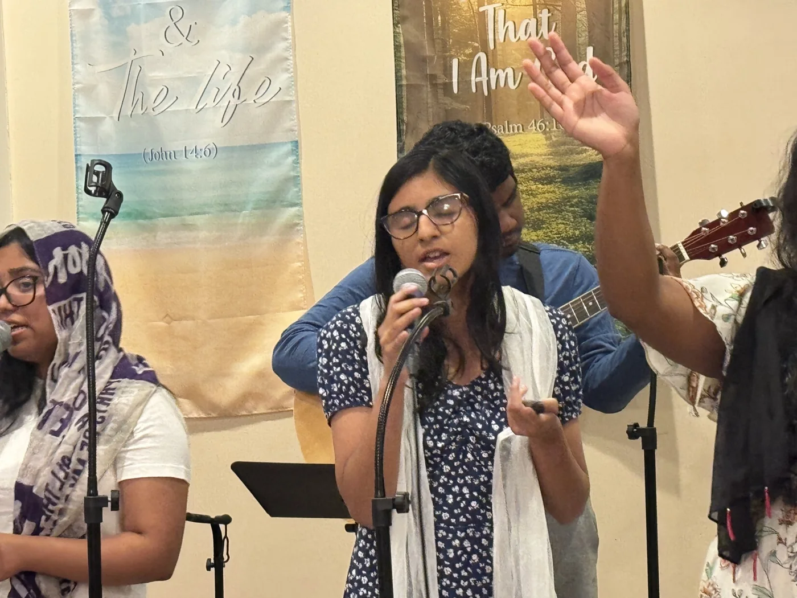

Lift your voice.
We sing and worship together. You can join in or listen as you get familiar with the songs.

Sunday worship
We gather to sing, pray, and open the Bible together. Come worship with us.
On Sundays
English · 9:30–10:30 AM
Malayalam · 10:30 AM–12:30 PM
We sing and worship together. You can join in or listen as you get familiar with the songs.
Scripture is at the heart of our gatherings and our life as a church.
Bring your gratitude, questions, and needs before God. Speak with a pastor if you’d like someone to pray with you.